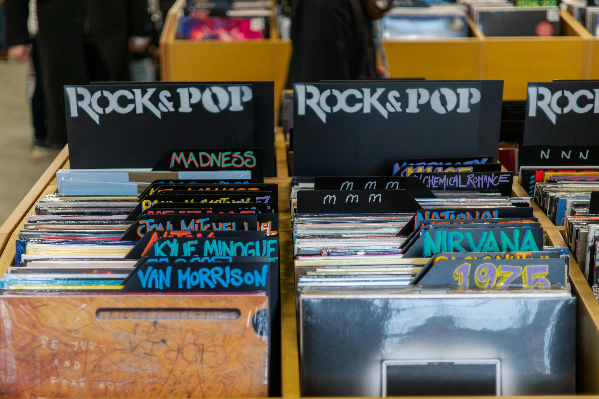
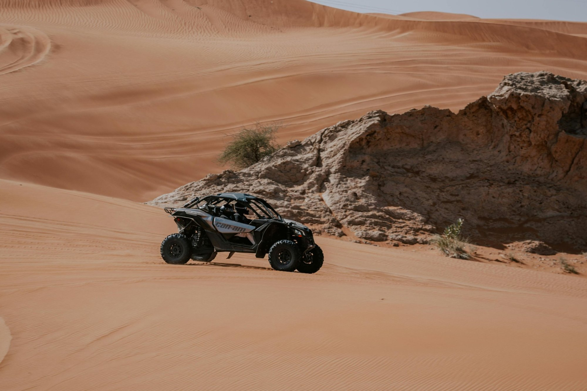
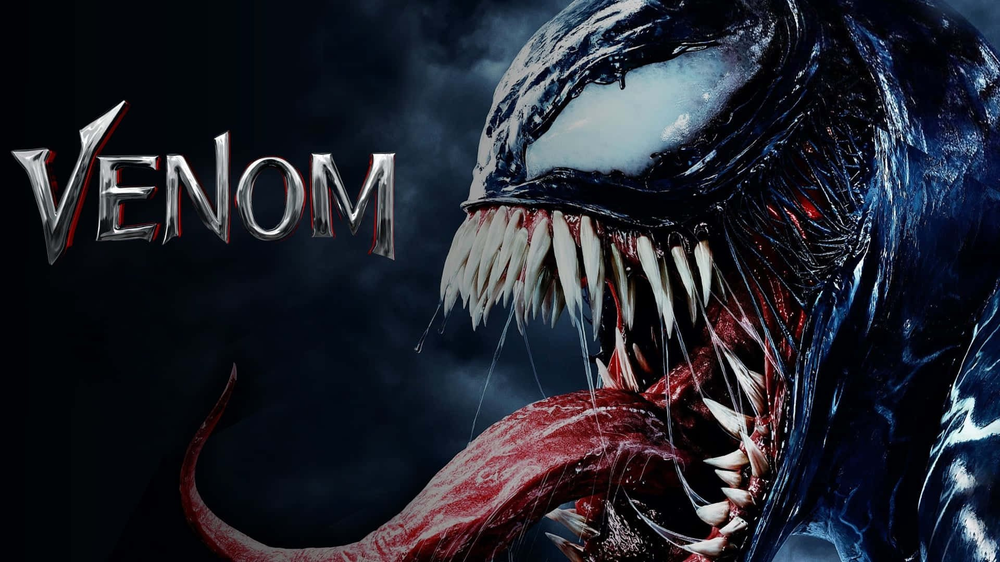

Los Mejores Goles en los Mundiales
"Desde el inicio de la Copa Mundial de la FIFA en 1930, los goles
han sido el alma de este evento. Este artículo repasa los momentos
más icónicos, como el gol de Diego Maradona conocido como la 'Mano
de Dios' ..."
Leer más

Los Mejores Álbumes de la Década
"Los últimos diez años han sido testigos de una explosión de
creatividad en la música, con álbumes que definieron nuestra era."
Leer más

Los Mejores Destinos de 2025
"Descubre los destinos más impresionantes para visitar este 2025.
Desde las paradisíacas playas de Bora Bora, donde la arena blanca se
combina con aguas cristalinas..."
Leer más

Los Mejores Villanos del Cine
Desde el maquiavélico Hannibal Lecter hasta el carismático Joker,
los villanos del cine han dejado una marca imborrable en la cultura
popular. Este artículo hace un recorrido por los antagonistas más
memorables, explorando qué los hace tan fascinantes...
Leer más